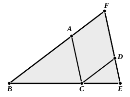
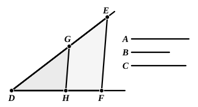
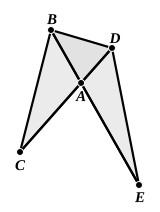
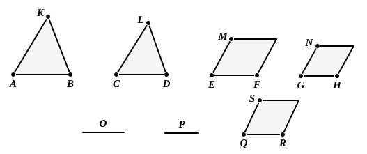
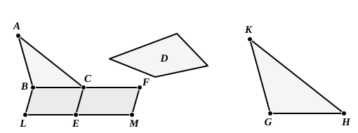
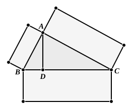

BOOK VI. PROPOSITIONS.¶

In equiangular triangles the sides about the equal angles are proportional, and those are corresponding sides which subtend the equal angles.

To three given straight lines to find a fourth proportional.

In equal triangles which have one angle equal to one angle the sides about the equal angles are reciprocally proportional; and those triangles which have one angle equal to one angle, and in which the sides about the equal angles are reciprocally proportional, are equal.

If four straight lines be proportional, the rectilineal figures similar and similarly described upon them will also be proportional; and, if the rectilineal figures similar and similarly described upon them be proportional, the straight lines will themselves also be proportional.

To construct one and the same figure similar to a given rectilineal figure and equal to another given rectilineal figure.
To a given straight line to apply a parallelogram equal to a given rectilineal figure and deficient by a parallelogrammic figure similar to a given one : thus the given rectilineal figure must not be greater than the parallelogram described on the half of the straight line and similar to the defect.

In right-angled triangles the figure on the side subtending the right angle is equal to the similar and similarly described figures on the sides containing the right angle.